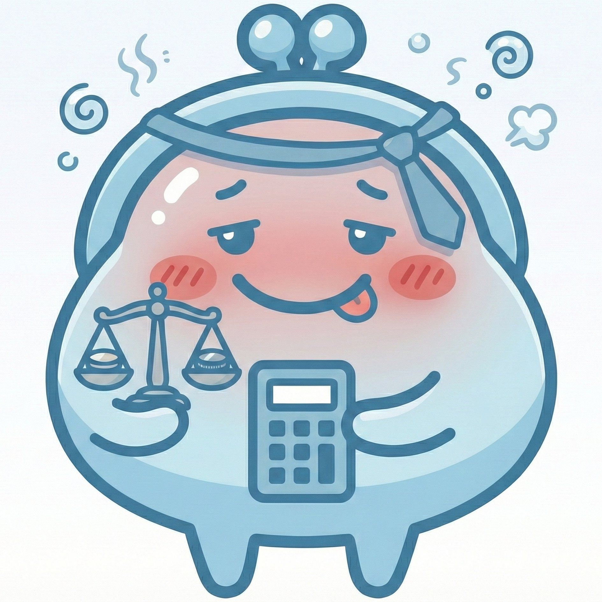
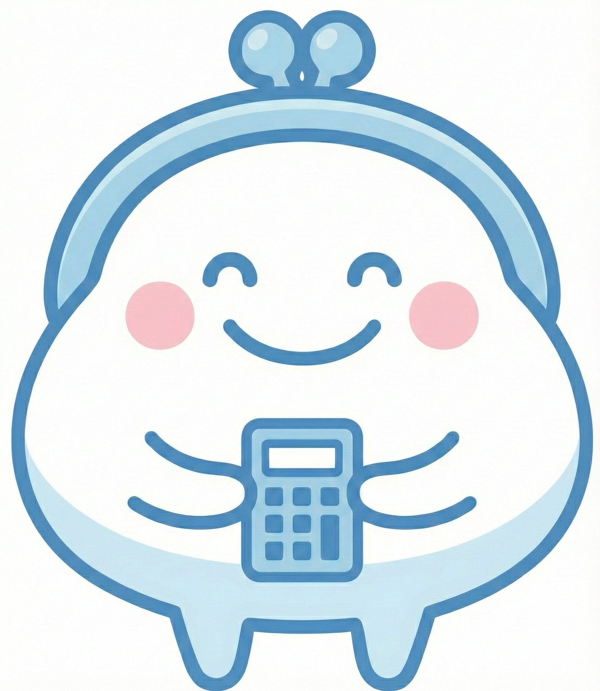

Web/iosサービスとを個人開発。
AIを武器に、ゼロからプロダクトをリリース。
Products
個人開発した4つのWebアプリ。

旅行・飲み会の割り勘をスマートに計算。iOS版も開発中。

飲み会の傾斜精算をかんたんに。
グループの日程調整をシンプルに解決するWebアプリ。
計画・タスク管理を手軽に始められるプランニングツール。
Other Projects
MTF分析搭載と最新の金融AIモデルを組み合わせた分析ツール。
字幕生成（Whisper）とBGMミックスを自動化。
Xの運用を自動最適するSNS運用ツール。
Services
AI活用のご相談から、セミナー登壇・執筆まで。
AI活用戦略の策定から、業務プロセスへの導入支援、ツール選定・PoCまで伴走します。
「非エンジニアのAI個人開発」「AI × 業務効率化」をテーマに。実体験ベースでお話しします。
note・Zennでの技術記事執筆。AI活用に関するメディア出演・取材もお受けします。